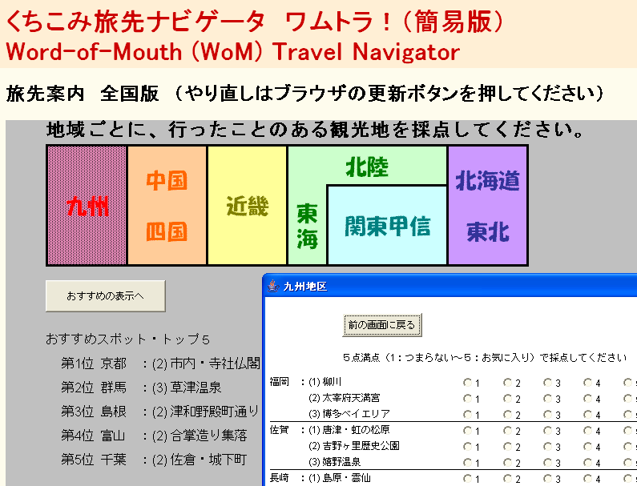
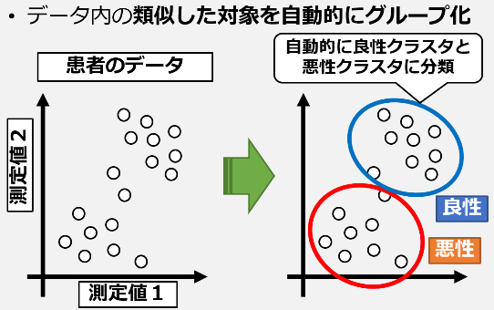
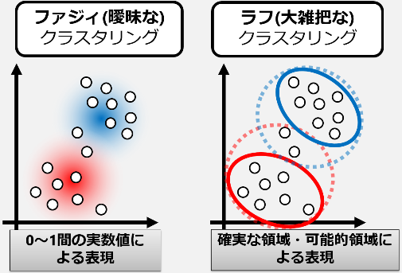
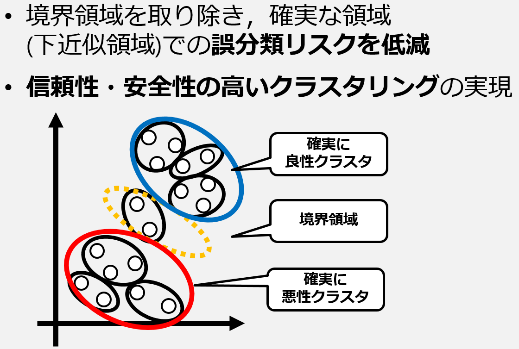
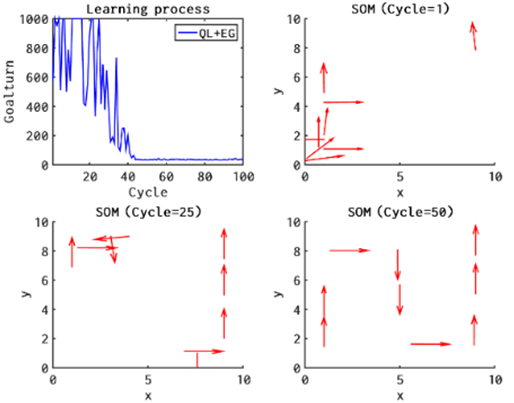

人間情報システム研究室では，ファジィ理論と多変量解析法との融合手法による，アンケートデータやインターネットコンテンツなどの大規模データベースからの知識発見，人間のあいまいな価値判断を含む感性情報の処理を実現するデータ解析法，認知モデルや感性モデルに基づいたエージェントシミュレーションや学習アルゴリズム，情報メディアの開発などの研究を行っています．
ユーザ間の嗜好の類似性に基づいて未評価項目の評価値を推定することでユーザに特化したお勧めアイテムを探索する協調フィルタリングを，旅行先お薦め問題に応用したシステムです．「自分と好みが似ている人がお気に入りと言っているものを教えてもらう」という"くちこみ"（英語では"Word of Mouth"）をコンピュータ上で再現したシステムです．多くのユーザが様々なコンテンツを自らの嗜好に基づいて評価した値の行列から，そのデータ行列中の未評価値，すなわち欠測値を他の観測値から推定するための理論や技術について研究しています．

境界をぼかすファジィ理論や，情報を大雑把にとらえるラフ集合理論などを基礎とした柔らかい情報処理であるソフトコンピューティングの観点から，人間が持つあいまいさを反映したデータマイニング，知識発見に関する研究を行っています．ビッグデータが身近になった昨今では膨大なデータを自動的に分類するクラスタリング技術の必要性が高まっています．分類のあいまいさ，不確実性を考慮することで，より柔軟で信頼性・安全性の高いクラスタリングを実現することができます．
  
近年の学習アルゴリズムは，人が持つ学習の枠組みを情報学的に洗練することで発展してきました．さまざまな学習アルゴリズムに対して認知的な視点からアレンジを加えていくことで，効率的な学習ができるようになります．図は学習プロセスを，神経細胞を模したものが大雑把に捉えていく様子を矢印で示したものです．S字の迷路を学習していく様子がわかります．このようなあいまいさを逆にうまく利用することでより効率的な学習が可能となります．

| 2023年度 ディー・エヌ・エー，シャープ，パナソニック コネクト，日鉄ソリューションズ，NTTデータ関西，朝日ネット |
| 2022年度 ソフトバンク，ヤフー，日本電気，KDDI，SMBC日興証券，オプテージ，レンゴー，MonotaRO |
| 2021年度 パナソニック，ダイキン工業，ヤフー，サイバーエージェント(2)，京セラドキュメントソリューションズ |
| 2020年度 NTT西日本(2)，パナソニック，シャープ(2)，イーソル |
| 2019年度 ヤフー，NTT西日本(2)，パナソニック(2)，ダイキン工業 |
| 2018年度 トヨタ自動車，ダイキン工業，住友電気工業(2)，シャープ |
| 平成29年度 三菱電機，本田技研工業，ダイキン工業，シンプレクス |
| 平成28年度 三菱電機，長谷川鉄工 |
| 平成27年度 日立製作所（２），NTT西日本，日本電気，野村総合研究所 |
| 平成26年度 トヨタ自動車（２），大和総研，日立製作所，日興システムソリューションズ，三菱自動車工業，住友電気工業 |
| 平成25年度 日立製作所（２），楽天，阪急電鉄，ダイキン工業，野村総合研究所，沖アドバンストコミュニケーションズ |
| 平成24年度 関西電力，日立製作所，三菱東京UFJ，ダイキン工業，データスタジアム |
| 平成23年度 朝日新聞社，NTTコミュニケーションズ |
| 平成22年度 パナソニック，シャープ |
| 平成21年度 関西電力，シャープ（２），キーエンス |
| 平成20年度 松下電器（２），松下電工，シャープ，日本電気，デンソー |
| 平成19年度 デンソー，シャープ，三菱電機 |
| 平成18年度 シャープ，関西電力，大和証券ＳＭＢＣ，オリエンタルランド |
| 平成17年度 松下電器，日本電気，東レ |
| 平成16年度 松下電器，西日本電信電話，住友信託銀行，日本総研，日本電気，三菱商事 |
| 平成15年度 シャープ，住友電気工業，三井住友海上火災，日本IBM，KDDI |
| 平成14年度 日本生命，富士通，三菱電機，松下電器，日本総研，日本電気 |